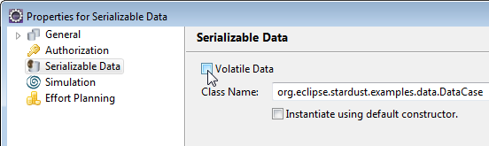

Figure: Specify the Parameters for a raw Type.
Serializable data may have any Java serializable data type. They are not as efficient in storage as primitive data because always the serialized form of data values is stored - most often resulting in storing the full value in an overflow table. You should not use serializable data when they are needed in query predicates. See the Programming Guide for more information about queries.
To specify a serializable data:
Note that no implicit initialization is performed for serializable data. The data has to be created by applications. It can be retrieved as output (out data mapping) from an application activity.
Figure: Data Properties Dialog for Serializable Data
Since Java version 5, the usage of parameterized variables is provided. In case you have a class using raw types, e.g.:
package org.eclipse.stardust.examples.data;
import java.io.Serializable;
public class ATest<T> implements Serializable
{
private static final long serialVersionUID = 1L;
private T value;
public T getValue()
{
return value;
}
public void setValue(T newValue)
{
value = newValue;
}
}
you have to specify parameters for this raw type:
Figure: Specify the Parameters for a raw Type.
The data mappings will use the same data path as for the specified type:
Figure: Data Path for Specified Type.
There is a checkbox on the property page of serializable data - Instantiate using default constructor. If this option is checked, the data value will be automatically created with the default constructor on the first reference of the data. The main advantage of this option is that there is no need for a specialized application that creates a new instance of the data. The new instance is created by the Stardust engine.
Figure: Automatic Instantiation of Serializable data
type.
This checkbox is disabled for abstract classes or interfaces. It is enabled only for those classes that have a public default constructor or no constructor (a constructor without parameters).
A checkbox is provided to mark serializable data as volatile. If you select this checkbox, the data values of the process data are removed from the Audit Trail on process completion. Please refer to section Marking Process Data as volatile of chapter Specifying Data for details on volatile data.

Figure: Marking the Data as volatile